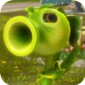
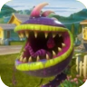
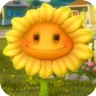
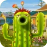
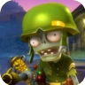
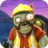
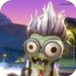
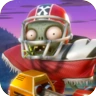

Plantas
Disparervilha

A Disparervilha é uma planta que tem como principal função
atuar na linha de frente contra os zumbis.
Ela utiliza ervilhas
para atacar seus inimigos, causando 35 de dano bruto
por ataque.
Além de seu ataque básico, a Disparervilha possui diferentes
habilidades que aumentam
sua eficiência durante o combate.
Sua primeira habilidade é a Ervilhadora, uma
espécie de metralhadora que permite
realizar ataques rápidos
e causar dano por segundo aos inimigos.
Carnívora

Planta de linha de frente que tem como objetivo eliminar
imediatamente os zumbis,
devorando-os ou mordendo-os até a morte.
Suas habilidades são a Gosma, capaz de deixar o zumbi lento e
impedir que ele use habilidades
por um período de 15 segundos;
a Enterrada, capaz de fazê-la mergulhar no chão para evitar
dano e
pegar um zumbi de surpresa;
e, por último, a Erva-Espinho, uma armadilha que,
ao ser acionada,
prende o zumbi, deixando-o vulnerável e passível de ser devorado.
Girassol

Planta de suporte capaz de curar seus aliados, mas que ainda é capaz de atacar seus inimigos,
causando 10 de dano por segundo (DPS).
Suas habilidades são o Raio de Cura, capaz de curar seus aliados dentro de um
determinado raio de distância;
o Raio Solar, que faz com que o Girassol se
plante
no chão para lançar um poderoso laser contra os zumbis; e, por fim, a Flor de Cura,
um vaso capaz de curar quem estiver próximo a ele.
Cacto

Um sniper habilidoso, capaz de eliminar zumbis a longa distância com seus disparos perfurantes.
Suas habilidades são a Batata-Mina, uma batata que, ao ser pisada por um zumbi, explode, lançando-o para o alto no processo; a Noz-Muralha, uma barreira de noz que impede os zumbis de passarem por aquele caminho; e, por fim, o Dronalho, um alho voador que atira nos zumbis e também pode lançar um morteiro de milho, bombardeando a região selecionada.
Zumbis
Soldado

O principal zumbi da linha de frente, que utiliza uma arma semelhante a um rifle de assalto para derrotar as plantas.
Suas habilidades são a Bomba de Fumaça, capaz de bloquear a visão das plantas, deixando-as cegas e causando 2 de dano por segundo; o Pulo Foguete, uma habilidade que faz com que o Soldado pule alto para alcançar prédios ou casas; e, por fim, o ZPG, um míssil capaz de derrotar qualquer planta ao acertá-la.
Engenheiro

O grande mestre da construção de portais, um zumbi que ajuda sua equipe a capturar a base construindo portais.
Suas habilidades são o Alto-Falante, que atordoa as plantas ao acertá-las e pode retirar a Carnívora da terra; o Drone Robô, que, assim como o do Cacto, pode lançar um bombardeio em uma região; e, por fim, a Britadeira, que o ajuda a se locomover mais rapidamente até o teleporte ou o objetivo.
Cientista

O médico da equipe, que possui uma arma de curto alcance capaz de dilacerar quem chegar perto dele.
Suas habilidades incluem a Bombola, uma bomba que gruda em qualquer superfície e até mesmo em uma planta, explodindo ao entrar em contato com o inimigo; o Teleporte, que permite alcançar aliados ou surpreender os inimigos; e, por fim, a Estação de Cura, um equipamento que, ao ser colocado no chão, é capaz de curar seus aliados em poucos segundos.
All-Star

O casca-grossa da equipe dos zumbis, um tanque capaz de aguentar bastante porrada com sua metralhadora giratória, que dispara bolas de futebol americano.
Suas habilidades são o Encontrão, que empurra as plantas, lançando-as para longe e causando 65 de dano; o Boneco de Treino, que pode bloquear os golpes dos inimigos; e, por fim, o Zumbinho-Bomba, que, ao ser lançado, explode e derruba as plantas ao redor da explosão.